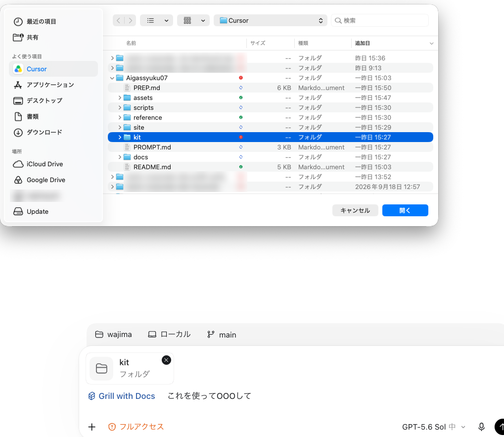
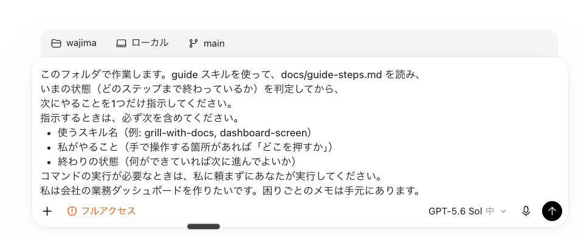

環境とAIの初期設定
当日の朝にやることです。インストールは事前準備で済んでいる前提で、キットを開いてガイドに最初の一言を送るところまで進めます。画面はCodex基準で説明します。
flowchart LR A["1 キットを開く
Codex / Claude"] --> B["2 最初の一言
コピーして貼る"] B --> C["AIが環境を確認
setup.sh"] C --> D["ガイドが
次の一手を返す"]
料理教室の調理台に立つところです。レシピ（キット）を開き、先生（ガイド）に「何から始めますか？」と聞けば、道具が揃っているかも先生が確かめてくれます。
当日の手順
-
キットをエージェントで開く
Codexを起動し、
書類→Aigassyuku07→kitフォルダを作業フォルダとして開きます。開くのはkitです（親のAigassyuku07ではありません）。
Codexの入力欄の「+」からフォルダを選び、 Aigassyuku07の中のkitを選んで「開く」Claudeを使う人: Claude Codeで同じフォルダを開きます。
CLAUDE.mdが読まれ、.claude/skills/のスキルが使えます。 -
最初の一言を送る
下のプロンプトをコピーして、入力欄に貼って送ります。
AIに貼る（Codex / Claude の入力欄へ）このフォルダで作業します。guide スキルを使って、docs/guide-steps.md を読み、 いまの状態（どのステップまで終わっているか）を判定してから、 次にやることを1つだけ指示してください。 指示するときは、必ず次を含めてください。 - 使うスキル名（例: dashboard-mvp, dashboard-research） - 使うモデル（段階が変わるときは切り替え方も） - 私がやること（手で操作する箇所があれば「どこを押すか」） - 終わりの状態（何ができていれば次に進んでよいか） コマンドの実行が必要なときは、私に頼まずにあなたが実行してください。 私は会社の業務ダッシュボードを作りたいです。困りごとのメモは手元にあります。
入力欄に貼ったら、右下の送信ボタン（または return）で送る AIが
setup.shを自分で実行して環境を確かめ、「現在地・次の一手・使うスキル・終わりの状態」を返してくれば成功です。実際の応答例（Codexでリハーサルした結果）
現在地: Step 0の途中です。ツール確認は完了（要対応0）ですが、GitHub未サインインのためStep 0は未完了です。Step 1以降も未着手です。 次の一手: GitHubへサインインする。 使うスキル: `guide` あなたがやること: 1. このフォルダのターミナルで `gh auth login` を実行 2. `GitHub.com` → `HTTPS` → `Login with a web browser` を選択 3. 表示されたURLをブラウザで開き、コードを入力して「Authorize GitHub CLI」を押す 4. 終わったら `./setup.sh --check-services` を実行 終わりの状態: `GitHub: ... でサインイン済み` と表示され、`NG` が1つもない。
AIの初期設定（モデルの使い分け）
このキットでは、仕事の種類でAIのモデルを使い分けます。手を動かす量が多い仕事は安くて速いモデル、全体を見直す仕事はいちばん賢いモデルに任せます。講師が普段使っている設定と同じ考え方です。
職人と設計士の使い分けです。量の多い作業は腕の速い職人（安いモデル）に、図面の見直しは設計士（賢いモデル）に。全部を設計士に頼むと高くて遅く、全部を職人に任せると直すべき所に気づけません。
| 仕事 | 使うモデル | Codex（2026年10月時点） | Claude |
|---|---|---|---|
| 作る・作り直す（段階1・4） | 安くて速い | GPT-5.6 Luna / Sol | Sonnet |
| 研究・計画（段階2・3） | いちばん賢い | GPT-6 Astra | Opus |
| 手伝い役のAI（サブエージェント） | 本体より一段下 | — | 本体Opusなら Sonnet |
| 見直し役のAI（レビュー） | 本体と同じ | — | 本体と同じ |
モデルの名前は数か月で変わります。名前ではなく「安い／賢い」の役割で覚えてください。
このキットでの前提
- ChatGPT（Codex）やClaudeの有料プラン（Pro等）を契約している前提です。上の表のモデルが選べます。
- キットの設定はキットのフォルダの中だけに効きます。あなたのPC全体の設定（
~/.codex、~/.claude）は書き換えません。 - Codexは、段階ごとに入力欄右下のモデル選択で切り替えます（フォルダ単位のモデル設定がCodexには効かないため）。
- Claude Codeは、キットの
.claude/settings.jsonで手伝い役のAIをsonnetにしてあります。本体は/modelと打って切り替えます。
PC全体に恒久的に入れたいとき
合宿のあとも同じ使い分けを全部の作業で使いたくなったら、次を貼ってください。AIが変更内容を見せ、同意してから書き換えます（元のファイルは残します）。
ai-setup で、このモデルの使い分けを私のPC全体の設定に恒久的に入れたいです。
どのファイルに何を書くかを先に見せてください。私が「OK」と言ってから書き換え、元のファイルは .bak として残してください。AIが裏でやっている確認
ガイドは最初に setup.sh を実行して、道具が揃っているかを確かめます。自分で確かめたいときは、次を貼ってください。
./setup.sh と ./setup.sh --check-services を実行して、結果を初心者にも分かる言葉で教えてください。NG があれば直し方も。

スキルの呼び方
キットには16本のスキル（AIへの手順書）が入っています。呼び方は3通りあり、どれでも動きます。
覚えるのは guide だけで大丈夫です。次に使うスキルは、ガイドが教えてくれます。一覧は道具（スキル一覧）にあります。
うまくいかないとき
| 症状 | 対処 |
|---|---|
| エージェントがスキルを知らないと言う | 開いているフォルダが kit か確認する。親の Aigassyuku07 を開いていると読めない |
| 「コマンドを実行してよいか」と聞かれる | 内容を読んで「許可」を押す。分からなければ講師を呼ぶ |
| GitHubが「未サインイン」と言われる | ターミナルで gh auth login を実行する（事前準備の4） |
| 会社のPCで入れられない | 隣の人と2人1組で1台を使い、自社の題材で進める。帰社後のインストール依頼は事前準備の依頼文を使う |
覚えること（3つ）
- 開くのは
kitフォルダ（親フォルダではない） - 作る・作り直すは安いモデル、研究・計画はいちばん賢いモデル
- 覚えるのは
guideと「ログして」だけ